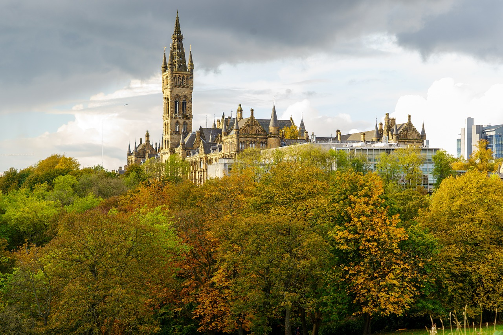
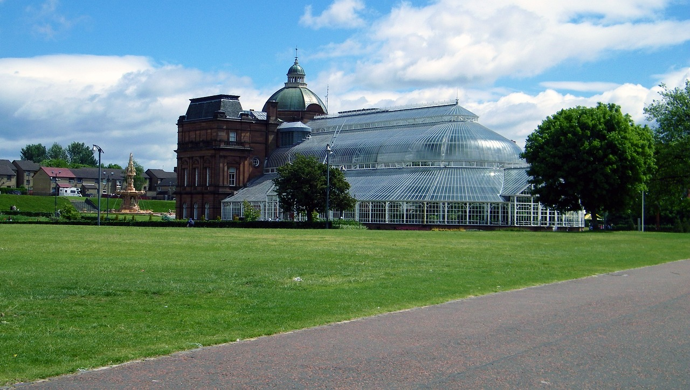
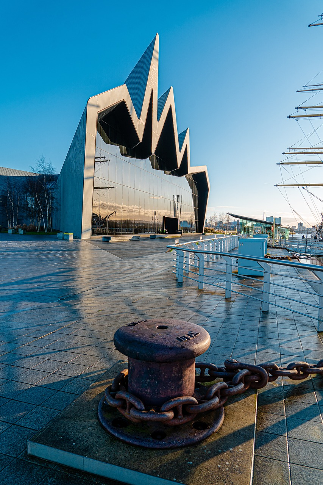

My favourite places to visit in Glasgow
University of Glasgow
Gothic-style campus featuring Roman ruins, a stunning chapel, and the tranquil Hunterian Museum. Enjoy the lush grounds, historic tours, and art galleries for a cultural visit.
Botanic Gardens
Tranquil botanical haven in the West End, featuring lush gardens, themed areas, and a children's play space. Highlights include glasshouses with exotic plants.
The Riverside Museum of Transport
Riverside Museum is Glasgow's award-winning transport museum. With over 3,000 objects on display there's everything from skateboards to locomotives, paintings to prams and cars.
